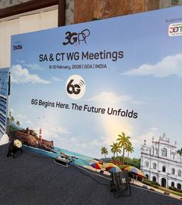
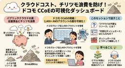

ENGINEERING BLOG ドコモ開発者ブログ
https://nttdocomo-developers.jp/
ENGINEERING BLOG ドコモ開発者ブログ
フィード

【6Gの兆しを感じる！】1年目社員の緊張と度胸の標準化奮闘記
ENGINEERING BLOG ドコモ開発者ブログ
はじめに みなさん、こんにちは！ドコモ 6Gテック部の増子です。今回、国際標準化の会合にはじめて現地参加しました。 今回参加したのは、3GPPにおいてモバイルネットワークのユースケースやサービス要求条件を議論するSA1の会合です。 これまでリモートで会合に参加する機会はありましたが、現地で体験したSA1は、想像していたものとは少し違っていました。 議論の進み方、発言のタイミング、会場の空気感――どれもが、画面越しではなかなかつかめなかったものばかりです。 本記事では、SA1会合を通じて実際に行ってみてはじめてわかったことや、現地での雰囲気・所感について大きく3点に分けてご紹介します。 3GPP…
3日前

正解のない世界でPdMはどう決断するか？カミナシ右田氏に学ぶ「覚悟」と「仕組み」【ドコモ×カミナシ】
ENGINEERING BLOG ドコモ開発者ブログ
本記事は、正解のない状況で意思決定を迫られるプロダクトマネージャー（PdM）に向けて、SaaSスタートアップの第一線で活躍するカミナシ右田涼氏による勉強会の内容と学びをお届けします。 事業変革を支えるテクノロジーとPdM こんにちは、ドコモ データプラットフォーム部（以下、DP部）PdMチームの浜松、三上です。 ドコモは現在、お客様に様々な価値を提供するため、通信事業に留まらず、様々な事業を展開しています。 変化の激しい時代の中で、止まることなく最高のCX（顧客体験）を届けるためには、日々事業そのものを変革し続けることが必要です。DP部では、AI×データを活用して、事業変革を加速させる、『事業…
4日前

クラウドの不要なリソースと削減可能額を可視化するダッシュボードを作って全社公開した話
ENGINEERING BLOG ドコモ開発者ブログ
こんにちは。ドコモ・テクノロジ株式会社 サービスインテグレーション事業部 スマートインテグレーション部の奥田絢香です。ドコモのCCoE（Cloud Center of Excellence）として、パブリッククラウドのコスト最適化やドコモグループ向け共通基盤運用の業務に携わっています。 今回は、2026年2月18日に開催されたNTT Tech Conference 2026にて「クラウドの不要なリソースと削減可能額を可視化するダッシュボードを作って全社公開した話」というテーマで登壇して来たので、当日のセッション内容を振り返りながら、技術的なハイライトをご紹介します。 発表の様子 クラウドに潜む…
4日前

【登壇レポート】20年続くシステムに挑む！ 生成AIを用いた6G標準化業務の効率化【NTT Tech Conference 2026】
ENGINEERING BLOG ドコモ開発者ブログ
本記事では、生成AIを用いて6G国際標準化業務をどのように効率化したのかを解説します。NTT Tech Conference2026で発表した内容となります。
10日前
ドキドキの国際舞台！3GPP SA2 現地参加デビュー！
ENGINEERING BLOG ドコモ開発者ブログ
はじめに こんにちは。ドコモ6Gテック部の1年目社員、菊池 大希（きくち たいき）です。このたび、3GPP SA2 #173会合に参加する機会をいただき、はじめて国際標準化会合に現地参加してきました。本ブログでは、 会合はどんな場所で開催されたのか はじめて国際会合に参加して感じた雰囲気 私が会合で何をしてきたのか といった点を中心に紹介していきたいと思います。ドコモでのグローバルな業務や、標準化業務に興味のある方に、少しでも雰囲気が伝わればうれしいです。 はじめに 第1章 今回参加した会合について 第2章 会合開催地・ゴアの雰囲気 第3章 はじめての国際会合で感じたこと 緊張の会合参加 事前…
12日前
【現場受け入れ型インターンシップ】6G国際標準化に向けた無線技術検討
ENGINEERING BLOG ドコモ開発者ブログ
はじめに こんにちは！NTTドコモ 6Gテック部の平野です！ ドコモでは様々なインターンシップを開催しています。その中でも、現場受け入れ型インターンシップは、実際の職場で社員と共に実務の体験ができる実践型のインターンシップです。 今回は2025年の夏に行われた現場受け入れ型インターンシップ（詳細はこちら）に関して、私たちのチームで行った内容を紹介します。また実際に参加いただいた高木さんの感想も最後に紹介します。 本インターンシップでは、高木さんに技術テーマの課題調査から解決策の検討までを取組んでいただきました。 ドコモのインターンシップや無線通信の標準化に興味がある方は、ぜひ最後までお読みくだ…
19日前
AI活用無線インターフェースの屋外実証実験の成功の裏側
ENGINEERING BLOG ドコモ開発者ブログ
はじめに こんにちは、6Gテック部無線アクセス技術担当 林 優太です。 今回は、2025年11月17日に報道発表した「6Gに向けたAI活用無線インターフェースの屋外実証実験に成功」の裏側では、どのような学びややりがいがあったのか、実験を担当した研究者目線でお伝えしたいと思います！ www.docomo.ne.jp 目次 はじめに 目次 AI活用無線インターフェース 実験準備から報道発表まで すべてを終えて Special Thanks AI活用無線インターフェース 6GではAIを活用して、より高品質な通信を提供することが検討されています。今回、報道発表で扱った技術は、AIを用いて、従来必要だっ…
1ヶ月前
AI未経験エンジニアのG検定合格体験記
ENGINEERING BLOG ドコモ開発者ブログ
非エンジニアが語るG検定合格までの実体験。AI基礎知識を学ぶための効果的な勉強法と合格後の変化を共有します。
1ヶ月前
AIによる高電力効率な基地局制御への挑戦！
ENGINEERING BLOG ドコモ開発者ブログ
こんにちは。ドコモ6Gテック部の田村です。 2025年11月に開催されたNTT R&D FORUM 2025にて展示した内容をご紹介します。今回ご紹介するのは、複数基地局を制御し最適なネットワークを維持しつつモバイルネットワークの基地局の消費電力を抑えることで省電力化する「高電力効率を実現する無線基地局最適化AI」に関する展示です。本展示は「NTT株式会社 ネットワークサービスシステム研究所」および「NTT株式会社 アクセスサービスシステム研究所」と共同で出展しました。本記事では、展示内容と技術のポイントを紹介します。 NTT R&D FORUM 2025 開催報告はこちらからご覧になれます。…
1ヶ月前
【3GPP SA2#172会合】6GアーキテクチャKey issue決定
ENGINEERING BLOG ドコモ開発者ブログ
こんにちは。ドコモ6Gテック部の巳之口 淳（みのくち あつし）です。 2025年11月17日～21日に米国・ダラスで開催された3GPP SA2#172会合に参加しました。 本記事では、会合の結果、特に、6Gアーキテクチャで議論されたKey issue(=検討課題）をご紹介します。 今回の内容は、10月の武漢会合レポートの続編です。過去の記事はこちらの開発者ブログでご確認ください。 nttdocomo-developers.jp ※本記事は2025年末の現在の状況と個人の見解を反映したものであり、将来の展開を保証するものではありません。 会議場入口にて SA2#172会合概要 6Gの新領域に関わ…
2ヶ月前
【R&D FORUM 2025 出展レポート】6G×AIの取組みを出展！
ENGINEERING BLOG ドコモ開発者ブログ
こんにちは！6Gテック部の久米です。今年もNTT R&D FORUM 2025に6Gに向けた取組みを展示してきたのでご紹介します。 去年に引き続き今年もドコモからも多くの技術を展示しました。本記事ではその中から6G×AIをテーマに出展した内容をご紹介します。 6G×AIブースの様子：大変多くの方に興味を持っていただきました 展示会の概要 AI・ロボットと協調する6G通信の実現ブース ドコモが考える6Gの世界観 AI-AI (AI-native Air Interface) 6G Harmonized Intelligence ハーモナイズドセンサレスロボット 自律共生ロボット 「DENDEN」…
2ヶ月前
【初学者向け】新入社員がモバイルシステム技術検定2級を合格するまで
ENGINEERING BLOG ドコモ開発者ブログ
はじめに はじめまして、ドコモ新入社員の菊池大希です。この度、「MCPCモバイルシステム技術検定 2級」に合格しました！ 本記事では、資格取得をめざしたきっかけから、実際に受験してみた感想、そしてこれから受験する方へのちょっとしたアドバイスまで、私の経験をまとめてみたいと思います。過去問や模試のない検定なので、同じように資格取得をめざす方やモバイル業界に興味を持っておられる方にとって非常に役立つ情報になると思います。 はじめに MCPCモバイルシステム技術検定2級とは 私の属性 目的 感想 私の取り組み方とこれから受験される方へのアドバイス 1. 公式テキストを熟読すべし。 2. 似ている技術…
2ヶ月前
6Gで進化するデータ収集の仕組み
ENGINEERING BLOG ドコモ開発者ブログ
はじめに こんにちは！ドコモ 6Gテック部の黒岩です。普段は、3GPP国際標準化活動に従事しております。 今回は、ネットワークの裏側で毎日行われているデータ収集のお話です。 スマホで動画を観たり、アプリを使ったりしているとき、ネットワークは膨大な情報をやり取りしています。安定した通信を届けるため、ネットワーク内部では、機器やソフトウェアの状態を常に見える化するためのデータを収集しています。 特に高度化が進むモバイルのコアネットワークにおいて、分析の材料となるこのデータ収集は極めて重要です。5Gでは、各ネットワーク機能間で情報をやり取りする機能が提供されています。 本記事では、 5Gで整備された…
2ヶ月前
6G検討開始！3GPP会合CT1#157参加レポート
ENGINEERING BLOG ドコモ開発者ブログ
初めまして。ドコモ 6Gテック部の村上と申します。 移動通信業界の標準化の舞台である3GPP全体で6Gの検討が進んでおりますが、端末とネットワークの間のプロトコルを司るCT1でも6Gに関する議論が今回開始されました。2025/10/13～2025/10/17の間にフランスのソフィア・アンティポリスにて開催されたCT1#157会合の模様についてご紹介いたします。 会場となったETSI会場 CT1の役割は端末とコアネットワーク間のプロトコルを定義することにありますが、詳細は下記の記事にてご紹介しております。 ぜひ、ご確認ください。 3GPP CT 取組み紹介：2025年5月 ブラチスラバ会合ととも…
2ヶ月前
AWS re:Invent 2025: The Frugal Architect(コスト最適化)のGameDayで3位獲得と関連アップデート
ENGINEERING BLOG ドコモ開発者ブログ
NTTドコモ R&Dイノベーション本部 サービスイノベーション部 ビッグデータ基盤担当 5年目社員の小澤です。 今年のアドベントカレンダーではThe Frugal Architectと関連アップデート、GameDayで3位を獲得したことについて投稿いたします。 2025 Japan AWS Top Engineers (AI/ML Data Engineer) と全資格保有者である2025 Japan All AWS Certifications Engineers として、任期1年の活動にも取り組んでいます。 現地でいただいたお気に入りのSWAG等 普段の業務では、1日数百TBにわたる4G、…
3ヶ月前
データガバナンスと開発効率を両立する - Databricks Appsによるセキュアなアプリ開発
ENGINEERING BLOG ドコモ開発者ブログ
1. はじめに 自己紹介 NTTドコモ データプラットフォーム部（以下DP部）の矢野です。 ドコモでは社内データ活用プラットフォームPochiやStreamlit in SnowflakeなどでStreamlitを活用しているのですが、Databricks Appsも今年日本リージョンでもリリースされたということで、実際に使ってみました！ 社内データ活用プラットフォームPochi*1とは 私たちDP部は社内のデータ民主化を目指し、StreamlitとGoogle Cloudで圧倒的に使いやすいデータ活用プラットフォームを開発・推進しています。このプラットフォームは、24年度は30万時間もの業務…
3ヶ月前
DIKWピラミッドで考えるLLMプロダクト、プロジェクト設計
ENGINEERING BLOG ドコモ開発者ブログ
はじめに R&D戦略部 社会実装推進担当の天沼です！普段はLLMに関連した技術調査やプロダクト化、社内適用PoCなどを担当しています。 最近の取り組みとしてLLMによって施策立案を自動化するという取り組みを行っていたのですが、自分自身でもしっくりくるアウトプットが生成できないなと感じました。 上記の悩みを考えているうちに、LLMを活用した案件でもデータ分析でよく使われるDIKWピラミッドを基にプロジェクトやプロダクトの設計を考えるのが有効なのではと感じました。ということで今回はDIKWピラミッドを基にLLMプロダクト、プロジェクトを設計していくときのポイントを考えてみたいと思います。 DIKW…
3ヶ月前
【報道発表解説】1to1マーケティングを加速するAI技術「大規模行動モデル（LAM）」を確立
ENGINEERING BLOG ドコモ開発者ブログ
はじめに NTTドコモ サービスイノベーション部の林です。 2025年11月12日にNTTドコモとNTTの連名で1to1マーケティングを加速するAI技術「大規模行動モデル（LAM）」を確立 〜お客さまの「どうしたい」を予測して販促施策を個別化することで、テレマーケティングの受注率を最大2倍に向上〜というタイトルで報道発表を行いました。本記事では、「ドコモでLAMをどのように活用する準備を整えていたのかを知りたい」、「LAMを自社でどのように活用できるのか知りたい」、という方に向けて、発表内容の一部を抜粋し、データ分析基盤の整備とマーケティングへの応用例をわかりやすく解説します。 NTTドコモ報…
3ヶ月前
インスタンスサイズを上げたのに実行時間が変わらない？SageMaker notebook instancesでの機械学習のボトルネックをCloudWatchで特定した話
ENGINEERING BLOG ドコモ開発者ブログ
自己紹介 NTTドコモ データプラットフォーム部(以下DP部)の江口です。普段はドコモが保有する顧客基盤データによる価値創出のためのパートナー企業向けデータプロダクトの企画/開発を行っております。その中でドコモデータを用いた生成モデルの学習を行うことになり、GPUを用いた機械学習モデルの構築をSageMaker notebook instances上で行いながら、実験中のリソース状況をモニタリングする必要性がでてきました。 通常、SageMakerで本格的なモデル学習を行う際は、管理やコストの観点から「SageMaker Training Jobs」を使用するのが一般的です。しかし、今回のフェ…
3ヶ月前
国際学会ISAPに参加して見えた「HAPSの今」と「世界の関心事」
ENGINEERING BLOG ドコモ開発者ブログ
はじめに こんにちは！6Gテック部の外園と、ドコモからSpace Compassに出向中の室城です。 我々は非地上ネットワーク（NTN）および高高度プラットフォーム（HAPS）の研究開発に携わる業界エンジニアとして、2025年10月27日〜31日に福岡で開催されたInternational Symposium on Antennas and Propagation（ISAP2025）に参加し、合計2件の発表を行いました。 この記事では、「ISAPで見えたNTN/HAPSの最新トレンド」と「世界の関心事」を整理し、さらに我々の研究発表の位置づけや、参加者との議論から見えたHAPSの"今"と"将来…
3ヶ月前
GitHub CopilotでSecurity Check Agentを作り、InnerSource化してみた話
ENGINEERING BLOG ドコモ開発者ブログ
NTTドコモ Advent Calendar 25日目の記事です。 1. はじめに 1.1. 自己紹介 こんにちは、サービスイノベーション部の千歩です！ 普段はソフトウェアエンジニアやセキュリティエンジニアの開発基盤整備や、社内勉強会を開催しています。 1.2 本記事のテーマと、読んでほしい人 本記事のテーマは「ソフトウェアエンジニアでもセキュリティエンジニア両者が気軽にセキュリティチェックをできるようにしよう！」です。 そのため、ソフトウェアエンジニアやセキュリティエンジニアの方々にぜひ読んでほしいです！ また、GitHub Copilot Custom AgentやInnerSourceに…
3ヶ月前
HMMマップマッチングとオープンソースツールの活用
ENGINEERING BLOG ドコモ開発者ブログ
クロステック開発部で位置情報を活用したサービス開発をしている小倉です。 スマートフォンを始めとするモバイル端末を多くの人が持ち歩くようになった現代において、その端末から取得される位置情報データはますます重要な価値を持っています。 しかし、位置情報データはGPSやWiFi、あるいは携帯基地局情報をもとにしているため、位置の精度が十分ではありません。 数十メートルずれることはよくあり、100メートル以上ずれることもあります。 また、位置情報の取得頻度も限られています。 そのため、計測していない間に大きく移動してしまい、ある場所を訪れたことを見落とす可能性もあります。 そこで、連続的なGPSデータか…
3ヶ月前
【初心者向け】LangGraphとGradioで作るAIエージェント検証環境
ENGINEERING BLOG ドコモ開発者ブログ
今回のテーマ 開発環境構築 Docker での開発環境の構築 チャットを試せるフロントをGradioで作成 AIエージェントの実装 お散歩エージェントの構築 グラフとツールの実装 今回のテーマ こんにちは！NTTドコモマーケティングメディア部の石塚裕之です！ 業務ではAIエージェントアプリの開発をしています。 最近AIエージェントやLLMを使ったアプリやサービスを作るにあたって簡単にWebアプリを作って試す機会が増えてきました。 私が所属するチームではフロントをGradioで構築してAIエージェントの動作を確認することが多いため今回の記事ではそのフロントでAIと会話できる画面を作成した後に、簡…
3ヶ月前
自動化で守るデータガバナンス── Python × GitHub Actions で実現するパーソナルデータの追跡
ENGINEERING BLOG ドコモ開発者ブログ
データ活用のスピードとガバナンスを両立！ドコモが挑むPython＆GitHub Actionsでのデータマート自動追跡のチャレンジを紹介します。
3ヶ月前
LLM時代のお客様の声分析 〜ベクトル検索の精度をとことん追求してみた〜
ENGINEERING BLOG ドコモ開発者ブログ
1. はじめに NTTドコモデータプラットフォーム部（以下DP部）の古川です。 大量のお客様の声からいかにして素早く、正確にインサイトを見つけ出し、事業活動に活かすか？これは多くの企業が直面する課題ではないでしょうか。 ドコモでもこれまで多岐にわたるお客様の声の分析や課題への対応管理は人手に頼ることが多く、貴重な声を迅速に施策へ活かすまでに時間と労力を要していました。 私たちのチームではこの課題を解決するため、新たな分析アプリケーションを開発しました。このアプリにより、お客様の声から課題を発見し、打ち手へと繋げるまでの一連のプロセスを、効率的かつ一気通貫で対応できるようになりました。開発にあた…
3ヶ月前
AWS re:Invent 2025に現地参加したドコモ・テクノロジ社員4名によるセッションレポート
ENGINEERING BLOG ドコモ開発者ブログ
はじめに こんにちは！ ドコモ・テクノロジの奥田です。 クリスマスイブですね🌲 みなさんのところにはサンタさんは来ましたか？ 私はしばらく会えていません…🎅 私が所属するドコモ・テクノロジという会社を聞いたことはありますか？ www.docomo-tech.co.jp ドコモ・テクノロジは移動通信システムを構成するネットワーク装置や携帯端末の開発、移動通信システムを保守・監視する装置の開発、先進技術を活用したスマートライフ・法人領域でのサービス・ソリューション開発などを行っているドコモグループR&Dの機能分担会社です。 私はその中の「サービスインテグレーション事業部」という組織に所属していて、…
3ヶ月前
APIの動作確認時に利用するパラメータの妥当性チェックツールを、AmazonQを活用して作成してみた
ENGINEERING BLOG ドコモ開発者ブログ
記事概要と想定読者 NTTドコモ 情報システム部の宮下と申します。 本記事では、APIの動作確認時に利用しているツール「Postman」において、投入したパラメータの妥当性を自動チェックするツールをAmazonQ Developerも駆使しながら作成しチェック作業の効率化/品質向上を実現した取り組みをご紹介します。 以下のような方を読者として想定しておりますので、ぜひご一読ください。 * API開発に携わるエンジニア * Postmanを始めとしたテストツールを利用している方 * パラメータ関連の人の目によるレビューを自動化したいと考えている方 * 生成AI（特にAmazonQ Develop…
3ヶ月前
Security Hubのベストプラクティスに違反したAWSリソースの検出
ENGINEERING BLOG ドコモ開発者ブログ
はじめに NTTドコモR&Dイノベーション本部サービスイノベーション部ビッグデータ基盤担当一年目の筒井です。今日ではシステムの運用を可能な限り自動化しようという流れがあります。私の所属するチームでも積極的に推進しており、様々なシステムの運用の自動化に努めています。そのためAWSリソースのセキュリティチェックを自動化するためのアプリを作成したのでご紹介します。 課題 私の所属するチームでは社内用アプリ開発プラットフォームを運用しており、管理項目が多く運用に大きなヒューマンリソースを割いています。このプラットフォームはAWSをインフラ基盤として構築されており、社内のユーザーがこのAWS環境上に沢山…
3ヶ月前
サイトのユーザビリティ評価をAIエージェントで自働化しようとした話
ENGINEERING BLOG ドコモ開発者ブログ
AIエージェントによるUX自動評価に挑んだドコモ入社3年目の奮闘記。UX評価AIを企画する際の落とし穴と現実的なラインを知れます。
3ヶ月前
ドコモの内製チームにおけるAWS研修の事例を紹介します！
ENGINEERING BLOG ドコモ開発者ブログ
はじめに こんにちは！NTTドコモ サービスイノベーション部ビッグデータ基盤担当で新卒2年目の中村です！ 普段はメインの業務として、社内のNW系ビッグデータ分析基盤であるIDAPという内製システムの開発・運用を担当しています。 この記事を開いてくださった方は、AWSに触れたことがある、あるいはこれから学ぼうとしている方が多いと思いますが、皆さんはどのようにしてAWSについて学びましたか？ 私の場合、配属先における研修で学びをスタートしましたが、その研修がとても楽しく有意義であったため、その内容や方針などを含めて本記事で紹介しようと思います！ 研修名は「mini IDAP」で、冒頭で記載したID…
3ヶ月前